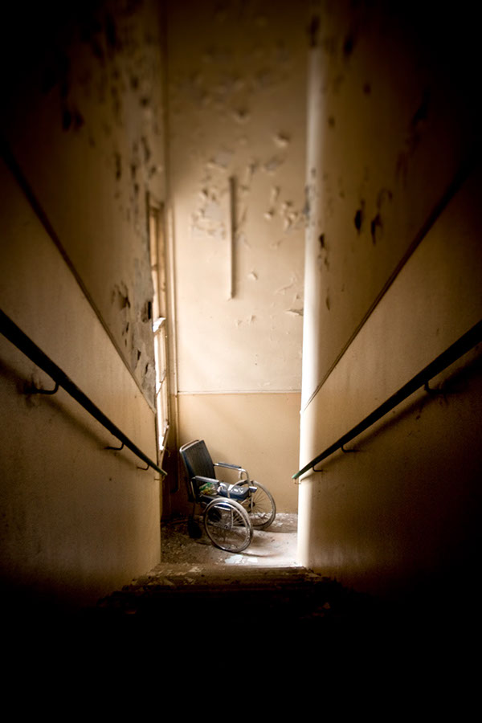

You look for an exit and notice a door at the edge of the room. You try to open it but the door is locked. Gabe suggests the group look for another exit and Alex suggests breaking through the door together with force. What do you decide?
1. Look for another exit.
2. Break through the door.
"Asylum" by Pizzente Gunale is licensed under CC BY-ND 4.0